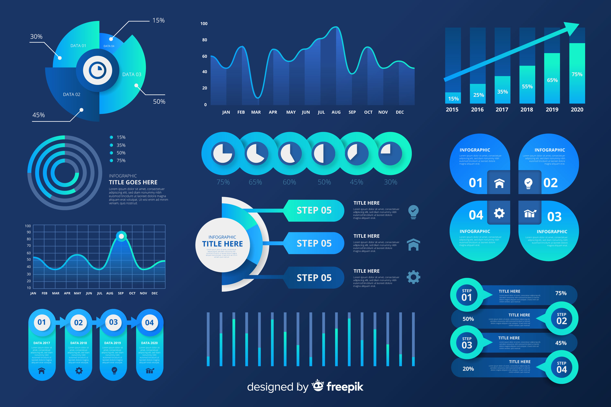
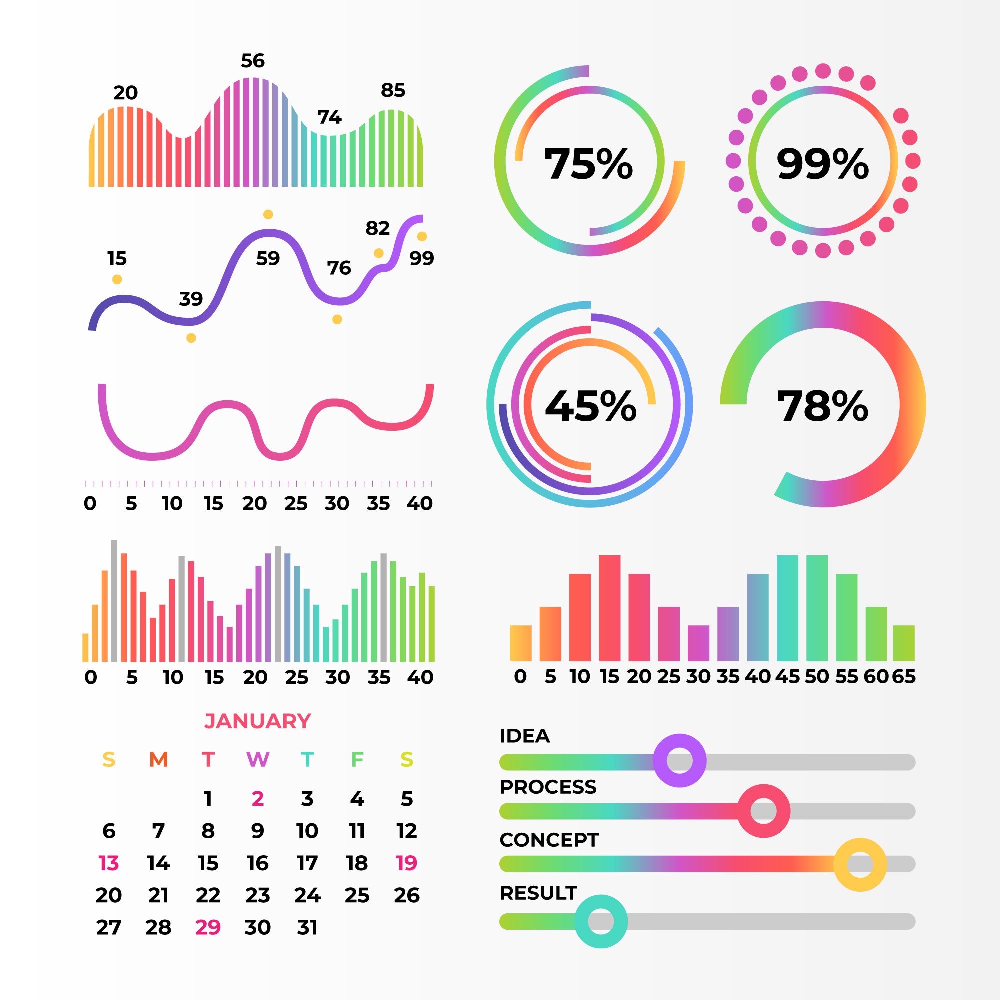

Consultoría en Estadística y Censos
Transformamos datos en conocimiento para decisiones estratégicas.


Transformamos datos en conocimiento para decisiones estratégicas.
Análisis estadístico para comprender tendencias y consumidores.
Diseño, ejecución y procesamiento de censos y relevamientos.
Aplicación de técnicas estadísticas para proyecciones confiables.
Gobiernos, ONGs y empresas que confían en nuestros datos.